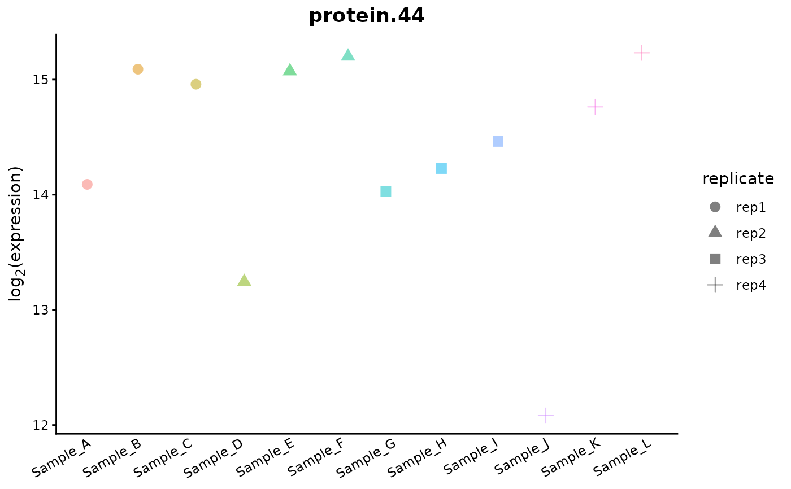
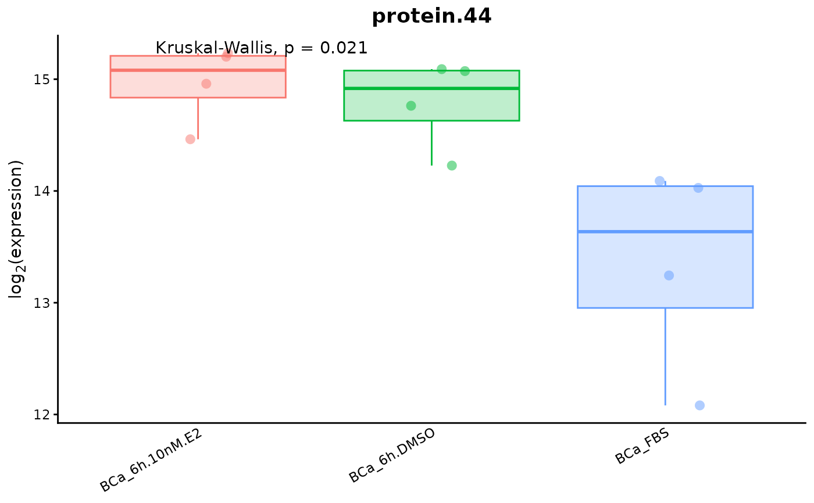
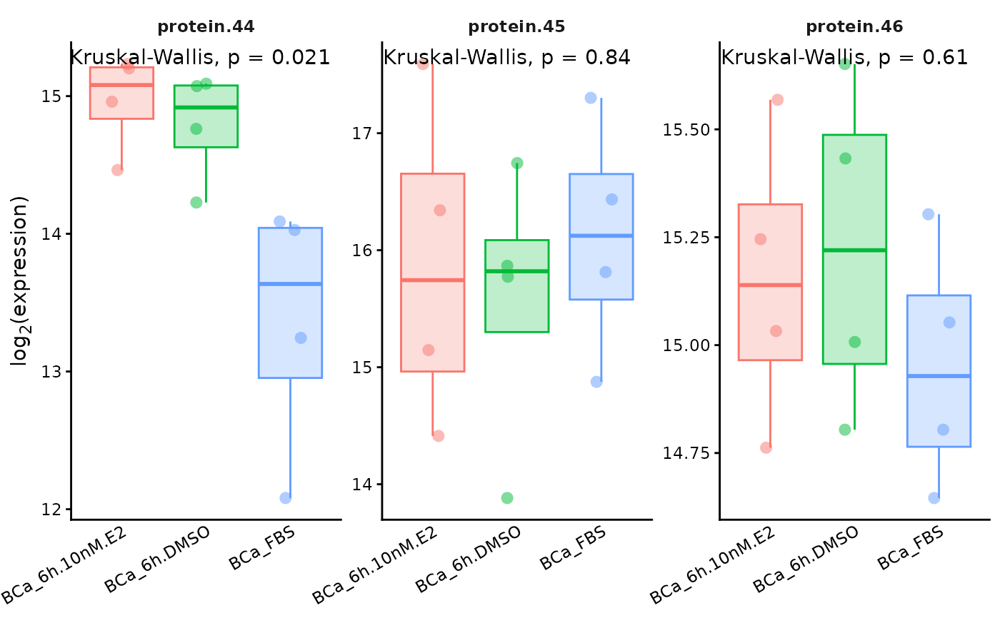
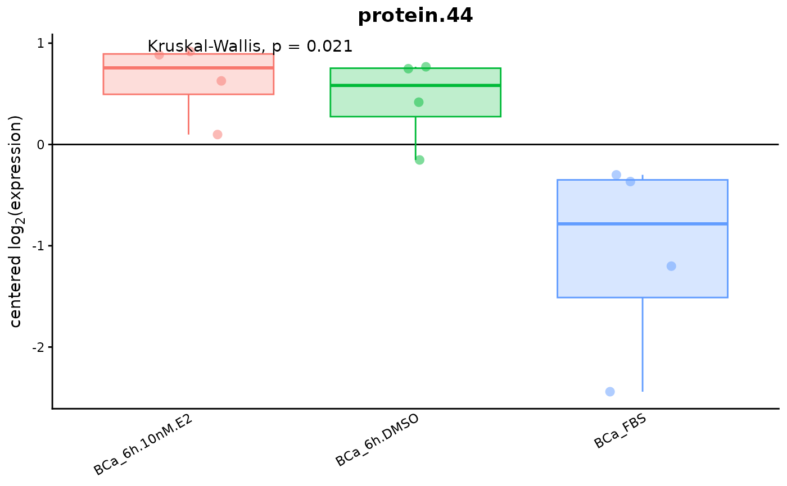
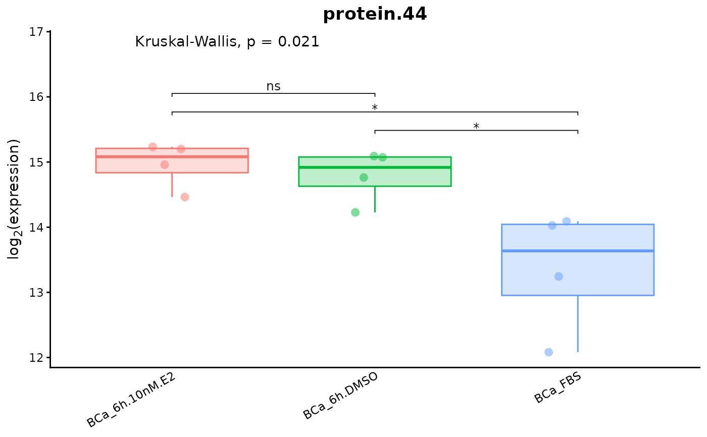

Plots a boxplot of the expression of a specific protein. Samples can be groups depending on a metadata column. Optionally, the p-values of all the pairwise (2-by-2) comparisons between groups can be added on top of the plot.
expression.boxplot(
DEprot.object,
protein.id,
which.data = "imputed",
sample.subset = NULL,
shape.column = NULL,
group.by.metadata.column = "column.id",
group.levels = NULL,
scale.expression = FALSE,
x.label.angle = 30,
pairwise.comparisons = FALSE,
pairwise.test.type = "wilcox.test",
pairwise.include.ns = TRUE,
pairwise.p.label = "p.signif",
pairwise.p.decimals = 2
)An object of class DEprot or DEprot.analyses.
String indicating a protein for which plot the expression. The identifier must correspond to the full row.name of the counts table (equivalent to the prot.id column of the fold change table of DEprot.analyses object).
String indicating which type of counts should be used. One among: 'raw', 'normalized', 'norm', 'imputed', 'randomized', 'random', 'imp'. Default: "imputed".
Character vector indicating a subset of samples to display. The identifiers must correspond to a IDs in the column.id column of the object's metadata. Default: NULL (all samples are shown).
String indicating a column from the metadata table. This column will be used as factor for the shape of the points on the boxplot. Default: NULL: no different shapes.
String indicating a column from the metadata table. This column will be used to define sample groups, and for each group it will be computed a mean of the counts. Default: "column.id" (no groups).
Ordered string vector indicating the order to use for the groups. Default: NULL, counts table order will be applied
Logic value indicating whether Z-scores should be computed. Default: FALSE (no scaling).
Numeric value indicating the rotation angle to use for the x-axis labels. Default: 30.
Logical value indicating whether the p-values of all the pairwise (2-by-2) comparisons between the groups should be added on top of the boxplot using ggpubr. When TRUE, a comparison is computed for each possible pair of groups defined by group.by.metadata.column. Default: FALSE.
String indicating the statistical test to use for the pairwise comparisons. Any of the ggpubr-supported tests is accepted and the value is case/format-insensitive: capitalization, dots, spaces and hyphens are ignored (e.g. "wilcox.test", "Wilcoxon", "WILCOX", "mann-whitney" are all equivalent). Supported families: "t.test" (Student's/Welch t-test), "wilcox.test" (Wilcoxon/Mann-Whitney), "anova" and "kruskal.test". Since the comparisons are performed 2-by-2, the two latter are applied through their exact two-sample equivalents ("anova" -> pooled t-test, "kruskal.test" -> Wilcoxon rank-sum). Default: "wilcox.test".
Logical value indicating whether the non-significant comparisons (p > 0.05) should be displayed. If FALSE, only the significant comparisons are shown. Default: TRUE.
String indicating how the pairwise p-values should be displayed (case/format-insensitive). Use "p.signif" (aliases: "stars", "significance", "symbol") to show the significance symbols (ns, *, **, ***, ****) drawn directly by ggpubr::stat_compare_means, or "p.value" (aliases: "number", "numeric", "exact") to show the numeric p-value. Default: "p.signif".
Numeric value indicating the number of decimals used to approximate the numeric p-values (used only when pairwise.p.label shows the numeric value). Values below 0.1 are rendered in scientific notation with a superscript exponent, e.g. 3.20×10-2. The actual (real) p-value is always displayed, so the uninformative p < 2.2e-16 is never shown. Default: 2.
A boxplot of class ggplot2.
# Expression for all samples of protein 'protein.44'
expression.boxplot(DEprot.object = DEprot::test.toolbox$dpo.imp,
protein.id = "protein.44",
shape.column = "replicate")

# Expression of protein 'protein.44' grouped by condition (combined.id)
expression.boxplot(DEprot.object = DEprot::test.toolbox$dpo.imp,
protein.id = "protein.44",
group.by.metadata.column = "combined.id")

# Expression of protein 'protein.44' grouped by condition (combined.id) and Z-scored
expression.boxplot(DEprot.object = DEprot::test.toolbox$dpo.imp,
protein.id = "protein.44",
group.by.metadata.column = "combined.id",
scale.expression = TRUE)

# Pairwise comparisons between conditions (significance symbols, Wilcoxon test)
expression.boxplot(DEprot.object = DEprot::test.toolbox$dpo.imp,
protein.id = "protein.44",
group.by.metadata.column = "combined.id",
pairwise.comparisons = TRUE)
#> `stat_compare_means()` with `comparisons` displays *unadjusted* p-values (no correction for multiple comparisons).
#> ℹ For p-values adjusted for multiple comparisons, use `geom_pwc()`, or `stat_pvalue_manual()` together with `compare_means(..., p.adjust.method = )`.
#> This message is displayed once per session.

# Pairwise comparisons showing the exact numeric p-value
expression.boxplot(DEprot.object = DEprot::test.toolbox$dpo.imp,
protein.id = "protein.44",
group.by.metadata.column = "combined.id",
pairwise.comparisons = TRUE,
pairwise.test.type = "t.test",
pairwise.p.label = "stars",
pairwise.p.decimals = 3,
pairwise.include.ns = FALSE)
